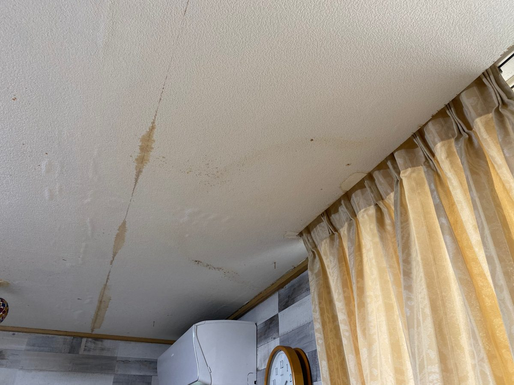
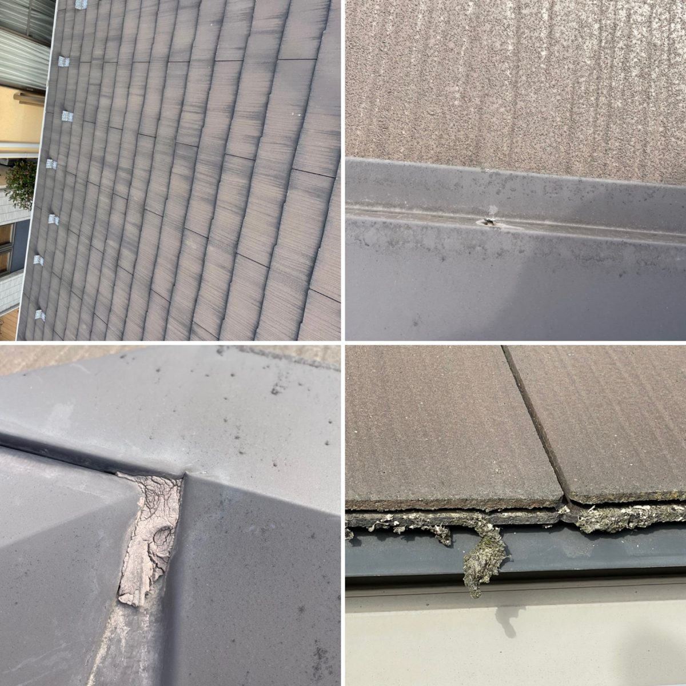
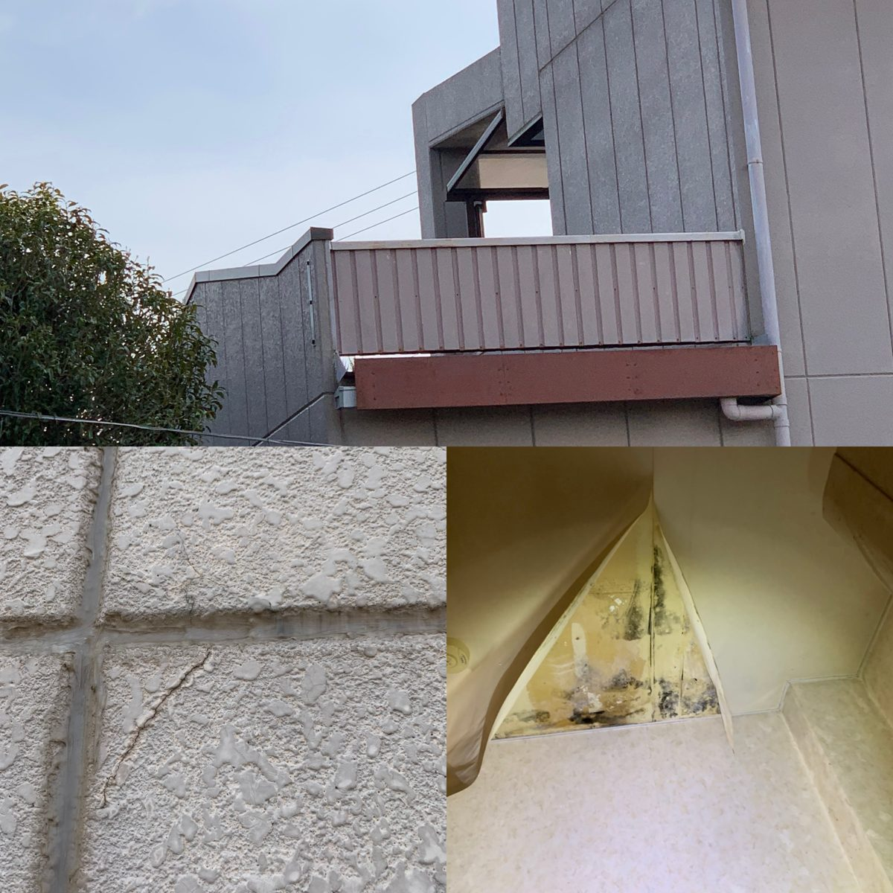
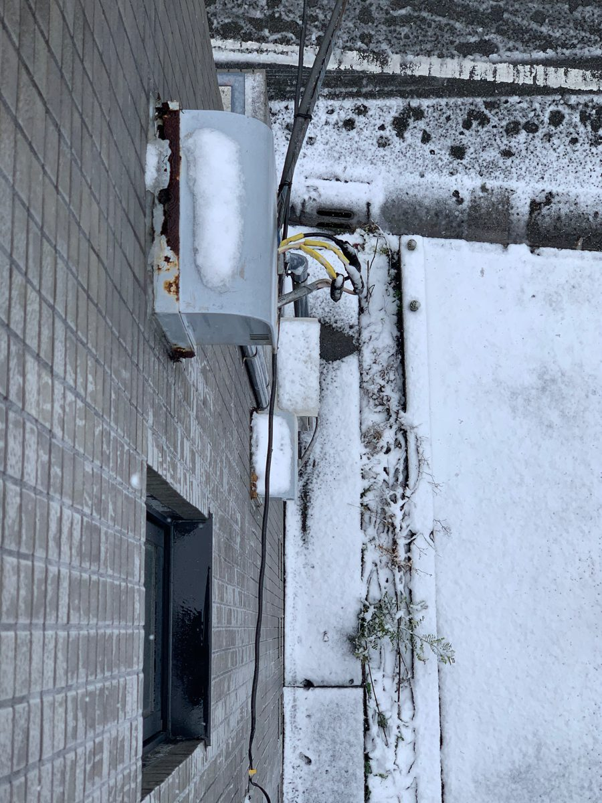
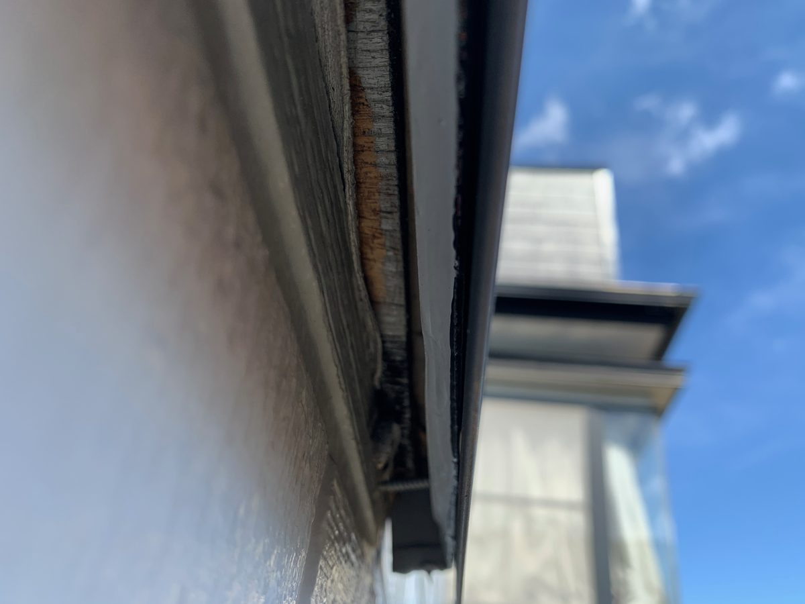

※写真は代表の施工実績です。お客様が特定できる情報（表札・住所・お顔など）は写していません。仕上がりは建物の状態により異なります。

天井裏の被害放置すると木材ごとの補修に。早いほど安く済みます。

室内の雨染みシミの真上が原因とは限りません。

屋根の応急養生全辺を固定し、飛散と再浸水を防ぎます。

外壁の中表面でなく防水紙・下地から直すのが本筋。

軒先のすき間コーキングの劣化は雨の入り口になります。

軒天（のきてん）染み・剥がれは雨水サインのことも。

配管まわり外壁の貫通部はすき間からの浸入を確認。

外壁の取り合い面と面の境目は雨水がたまりやすい所。

防水の劣化錆と剥離が出たらやり替え時期。

防水の完了例※別現場です（同一箇所の施工前後ではありません）。